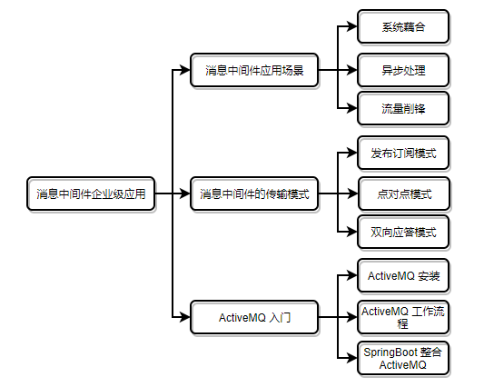

点击上方“Java架构沉思录”，选择“置顶公众号”。
有内涵、有价值的文章第一时间送达！
前言
众所周知，消息中间件是大型分布式系统中不可或缺的重要组件。它使用简单，却解决了不少难题，比如异步处理，系统耦合，流量削锋，分布式事务管理等。实现了一个高性能，高可用，高扩展的系统。本章通过介绍消息中间件的应用场景，消息中间件的传输模式，ActiveMQ快速入门 三个方面来对消息中间件进行入门介绍。还在等什么，赶快来学习吧！
说明：消息中间件非常强大，值得我们认真去学习和使用。完整代码请异步github。
技术：消息中间件的应用场景，通信模式，ActiveMQ。
源码：
https://github.com/ITDragonBlog/daydayup/tree/master/MQ
文章目录结构：

消息中间件应用场景
异步处理
异步处理：调用者发起请求后，调用者不会立刻得到结果，也无需等待结果，继续执行其他业务逻辑。提高了效率但存在异步请求失败的隐患，适用于非核心业务逻辑处理。
同步处理：调用者发起请求后，调用者必须等待直到返回结果，再根据返回的结果执行其他业务逻辑。效率虽然没有异步处理高，但能保证业务逻辑可控性，适用于核心业务逻辑处理。
举一个比较常见的应用场景：为了确保注册用户的真实性，一般在注册成功后会发送验证邮件或者验证码短信，只有认证成功的用户才能正常使用平台功能。
如下图所示：同步处理和异步处理的比较。

用消息中间件实现异步处理的好处：
一、在传统的系统架构，用户从注册到跳转成功页面，中间需要等待邮件发送的业务逻辑耗时。这不仅影响系统响应时间，降低了CPU吞吐量，同时还影响了用户的体验。
二、通过消息中间件将邮件发送的业务逻辑异步处理，用户注册成功后发送数据到消息中间件，再跳转成功页面，邮件发送的逻辑再由订阅该消息中间件的其他系统负责处理。
三、消息中间件的读写速度非常的快，其中的耗时可以忽略不计。通过消息中间件可以处理更多的请求。
小结：正确使用消息中间件将非核心业务逻辑功能异步处理，可以提高系统的响应效率，提高了CPU的吞吐量，改善用户的体验。
系统耦合和事务的最终一致性
分布式系统是若干个独立的计算机（系统）集合。每个计算机负责自己的模块，实现系统的解耦，也避免单点故障对整个系统的影响。每个系统还可以做一个集群，进一步降低故障的发生概率。
在这样的分布式系统中，消息中间件又扮演着什么样的角色呢？
举一个比较常见的应用场景：订单系统下单成功后，需要调用仓库系统接口，选择最优的发货仓库和更新商品库存。若因为某种原因在调用仓库系统接口失败，会直接影响到下单流程。
如下图所示：感受一下消息中间件扮演的重要角色。

用消息中间件实现系统耦合的好处：
一、消息中间件可以让各系统之间耦合性降低，不会因为其他系统的异常影响到自身业务逻辑。各尽其职，订单系统只需负责将订单数据持久化到数据库中，仓库系统只需负责更新库存，不会因为仓库系统的原因从而影响到下单的流程。
二、各位看官是否发现了一个问题，下单和库存减少本应该是一个事务。因为分布式的原因很难保证事务的强一致性。这里通过消息中间件实现事务的最终一致性效果(后续会详细介绍)。
小结：事务的一致性固然重要，没有库存会导致下单失败是一个理论上很正常的逻辑。但实际业务中并非如此，我们完全可以利用发货期通过采购或者借库的方式来增加库存。这样无疑可以增加销量，还是可以保证事务的最终一致性。
流量削锋
流量削锋也称限流。在秒杀，抢购的活动中，为了不影响整个系统的正常使用，一般会通过消息中间件做限流，避免流量突增压垮系统，前端页面可以提示"排队等待"，即便用户体验很差，也不能让系统垮掉。

小结：限流可以在流量突增的情况下保障系统的稳定。系统宕机会被同行抓住笑柄。
消息中间件的传输模式
消息中间件除了支持对点对和发布订阅两种模式外，在实际开发中还有一种双向应答模式被广泛使用。
点对点(p2p)模式
点对点(p2p)模式有三个角色：消息队列（Queue），发送者(Sender)，接收者(Receiver)。发送者将消息发送到一个特定的队列中，等待接收者从队列中获取消息消耗。
P2P的三个特点：
一、每个消息只能被一个接收者消费，且消息被消费后默认从队列中删掉（也可以通过其他签收机制重复消费）。
二、发送者和接收者之间没有依赖性，生产者发送消息和消费者接收消息并不要求同时运行。
三、接收者在成功接收消息之后需向队列发送接收成功的确认消息。

发布订阅(Pub/Sub)模式
发布订阅(Pub/Sub)模式也有三个角色：主题（Topic），发布者（Publisher），订阅者（Subscriber）。发布者将消息发送到主题队列中，系统再将这些消息传递给订阅者。
Pub/Sub的特点：
一、每个消息可以被多个订阅者消费。
二、发布者和订阅者之间存在依赖性。订阅者必须先订阅主题后才能接收到信息，在订阅前发布的消息，订阅者是接收不到的。
三、非持久化订阅：如果订阅者不在线，此时发布的消息订阅者是也接收不到，即便订阅者重新上线也接收不到。
四、持久化订阅：订阅者订阅主题后，即便订阅者不在线，此时发布的消息可以在订阅者重新上线后接收到的。

双向应答模式
双向应答模式并不是消息中间件提供的一种通信模式，它是由于实际生成环境的需要，在原有的基础上做了改良。即消息的发送者也是消息的接收者。消息的接收者也是消息的发送者。如下图所示

ActiveMQ 入门
ActiveMQ是Apache出品，简单好用，能力强大，可以处理大部分的业务的开源消息总线。同时也支持JMS规范。
JMS（JAVA Message Service,java消息服务）API是一个消息服务的标准或者说是规范，允许应用程序组件基于JavaEE平台创建、发送、接收和读取消息。它使分布式通信耦合度更低，消息服务更加可靠以及异步性。
ActiveMQ 安装
ActiveMQ 的安装很简单，三个步骤：
第一步：下载，官网下载地址：http://activemq.apache.org/download.html。
第二步：运行，压缩包解压后，在bin目录下根据电脑系统位数找到对应的wrapper.exe程序，双击运行。
第三步：访问，浏览器访问http://localhost:8161/admin，账号密码都是admin。
ActiveMQ 工作流程
我们通过简单的P2P模式来了解ActiveMQ的工作流程。
生产者发送消息给MQ主要步骤：
第一步：创建连接工厂实例
第二步：创建连接并启动
第三步：获取操作消息的接口
第四步：创建队列，即Queue或者Topic
第五步：创建消息发送者
第六步：发送消息，关闭资源
import java.util.Random;
import javax.jms.Connection;
import javax.jms.ConnectionFactory;
import javax.jms.DeliveryMode;
import javax.jms.Destination;
import javax.jms.MessageProducer;
import javax.jms.Session;
import javax.jms.TextMessage;
import org.apache.activemq.ActiveMQConnection;
import org.apache.activemq.ActiveMQConnectionFactory;
/**
* 消息队列生产者
* @author itdragon
*/
public class ITDragonProducer {
private static final String QUEUE_NAME = "ITDragon.Queue";
public static void main(String[] args) {
// ConnectionFactory: 连接工厂,JMS 用它创建连接
ConnectionFactory connectionFactory = null;
// Connection: 客户端和JMS系统之间建立的链接
Connection connection = null;
// Session: 一个发送或接收消息的线程 ,操作消息的接口
Session session = null;
// Destination: 消息的目的地,消息发送给谁
Destination destination = null;
// MessageProducer: 消息生产者
MessageProducer producer = null;
try {
// step1 构造ConnectionFactory实例对象，需要填入 用户名, 密码 以及要连接的地址，默认端口为"tcp://localhost:61616"
connectionFactory = new ActiveMQConnectionFactory(ActiveMQConnection.DEFAULT_USER,
ActiveMQConnection.DEFAULT_PASSWORD, ActiveMQConnection.DEFAULT_BROKER_URL);
// step2 连接工厂创建连接对象
connection = connectionFactory.createConnection();
// step3 启动
connection.start();
// step4 获取操作连接
/**
* 第一个参数：是否设置事务 true or false。 如果设置了true，第二个参数忽略，并且需要commit()才执行
* 第二个参数：acknowledge模式
* AUTO_ACKNOWLEDGE：自动确认，客户端发送和接收消息不需要做额外的工作。不管消息是否被正常处理。 默认
* CLIENT_ACKNOWLEDGE：客户端确认。客户端接收到消息后，必须手动调用acknowledge方法，jms服务器才会删除消息。
* DUPS_OK_ACKNOWLEDGE：允许重复的确认模式。
*/
session = connection.createSession(Boolean.TRUE, Session.AUTO_ACKNOWLEDGE);
// step5 创建一个队列到目的地
destination = session.createQueue(QUEUE_NAME);
// step6 在目的地创建一个生产者
producer = session.createProducer(destination);
// step7 生产者设置不持久化，若要设置持久化则使用 PERSISTENT
producer.setDeliveryMode(DeliveryMode.NON_PERSISTENT);
// step8 生产者发送信息，具体的业务逻辑
sendMessage(session, producer);
session.commit();
} catch (Exception e) {
e.printStackTrace();
} finally {
try {
if (null != connection) {
connection.close();
}
} catch (Exception e) {
e.printStackTrace();
}
}
}
public static void sendMessage(Session session, MessageProducer producer) throws Exception {
for(int i = 0; i < 5; i++) {
String []operators = {"+","-","*","/"};
Random random = new Random(System.currentTimeMillis());
String expression = random.nextInt(10)+operators[random.nextInt(4)]+(random.nextInt(10)+1);
TextMessage message = session.createTextMessage(expression);
// 发送消息到目的地方
producer.send(message);
System.out.println("Queue Sender ---------> " + expression);
}
}
}
消费者从MQ中获取数据消费步骤和上面类似，只是将发送消息改成了接收消息。
import javax.jms.Connection;
import javax.jms.ConnectionFactory;
import javax.jms.Destination;
import javax.jms.MessageConsumer;
import javax.jms.Session;
import javax.jms.TextMessage;
import org.apache.activemq.ActiveMQConnection;
import org.apache.activemq.ActiveMQConnectionFactory;
import com.itdragon.utils.ITDragonUtil;
/**
* 消息队列消费者
* @author itdragon
*/
public class ITDragonConsumer {
private static final String QUEUE_NAME = "ITDragon.Queue"; // 要和Sender一致
public static void main(String[] args) {
ConnectionFactory connectionFactory = null;
Connection connection = null;
Session session = null;
Destination destination = null;
// MessageConsumer: 信息消费者
MessageConsumer consumer = null;
try {
connectionFactory = new ActiveMQConnectionFactory(ActiveMQConnection.DEFAULT_USER,
ActiveMQConnection.DEFAULT_PASSWORD, ActiveMQConnection.DEFAULT_BROKER_URL);
connection = connectionFactory.createConnection();
connection.start();
session = connection.createSession(Boolean.FALSE, Session.AUTO_ACKNOWLEDGE);
destination = session.createQueue(QUEUE_NAME);
consumer = session.createConsumer(destination);
// 不断地接收信息，直到没有为止
while (true) {
TextMessage message = (TextMessage) consumer.receive();
if (null != message) {
System.out.print(ITDragonUtil.cal(message.getText()));
} else {
break;
}
}
} catch (Exception e) {
e.printStackTrace();
} finally {
try {
if (null != connection) {
connection.close();
}
} catch (Exception e) {
e.printStackTrace();
}
}
}
}
SpringBoot 整合ActiveMQ使用
SpringBoot可以帮助我们快速搭建项目，减少Spring整合第三方配置的精力。SpringBoot整合ActiveMQ也是非常简单，只需要简单的两个步骤：
第一步，在pom.xml文件中添加依赖使其支持ActiveMQ
第二步，在application.properties文件中配置连接ActiveMQ参数
pom.xml是Maven项目的核心配置文件
<dependency> <!-- 支持ActiveMQ依赖 -->
<groupId>org.springframework.boot</groupId>
<artifactId>spring-boot-starter-activemq</artifactId>
</dependency>
<dependency> <!-- 支持使用mq连接池 -->
<groupId>org.apache.activemq</groupId>
<artifactId>activemq-pool</artifactId>
</dependency>
application.properties是SpringBoot项目的核心参数配置文件
spring.activemq.user=admin
spring.activemq.password=admin
spring.activemq.broker-url=tcp://localhost:61616
spring.activemq.in-memory=true
spring.activemq.pool.enabled=true
spring.activemq.in-memory 默认值为true，表示无需安装ActiveMQ的服务器，直接使用内存。spring.activemq.pool.enabled 表示通过连接池的方式连接。
springboot-activemq-producer
springboot-activemq-producer 项目模拟生产者所在的系统，支持同时发送点对点模式和发布订阅模式。
两个核心文件：一个是消息发送类，一个是队列Bean管理配置类。
三种主要模式：一个是对点对模式，队列名为"queue.name"；一个是发布订阅模式，主题名为"topic.name"；最后一个是双向应答模式，队列名为"response.name" 。
import java.util.Random;
import javax.jms.Queue;
import javax.jms.Topic;
import org.springframework.beans.factory.annotation.Autowired;
import org.springframework.jms.annotation.JmsListener;
import org.springframework.jms.core.JmsMessagingTemplate;
import org.springframework.scheduling.annotation.EnableScheduling;
import org.springframework.scheduling.annotation.Scheduled;
import org.springframework.stereotype.Service;
/**
* 消息队列生产者
* @author itdragon
*/
@Service
@EnableScheduling
public class ITDragonProducer {
@Autowired
private JmsMessagingTemplate jmsTemplate;
@Autowired
private Queue queue;
@Autowired
private Topic topic;
@Autowired
private Queue responseQueue;
/**
* 点对点(p2p)模式测试
* 包含三个角色：消息队列（Queue），发送者(Sender)，接收者(Receiver)。
* 发送者将消息发送到一个特定的队列，队列保留着消息，直到接收者从队列中获取消息。
*/
@Scheduled(fixedDelay = 5000)
public void testP2PMQ(){
for(int i = 0; i < 5; i++) {
String []operators = {"+","-","*","/"};
Random random = new Random(System.currentTimeMillis());
String expression = random.nextInt(10)+operators[random.nextInt(4)]+(random.nextInt(10)+1);
jmsTemplate.convertAndSend(this.queue, expression);
System.out.println("Queue Sender ---------> " + expression);
}
}
/**
* 订阅/发布(Pub/Sub)模拟测试
* 包含三个角色：主题（Topic），发布者（Publisher），订阅者（Subscriber） 。
* 多个发布者将消息发送到Topic,系统将这些消息传递给多个订阅者。
*/
@Scheduled(fixedDelay = 5000)
public void testPubSubMQ() {
for (int i = 0; i < 5; i++) {
String []operators = {"+","-","*","/"};
Random random = new Random(System.currentTimeMillis());
String expression = random.nextInt(10)+operators[random.nextInt(4)]+(random.nextInt(10)+1);
jmsTemplate.convertAndSend(this.topic, expression);
System.out.println("Topic Sender ---------> " + expression);
}
}
/**
* 双向应答模式测试
* P2P和Pub/Sub是MQ默认提供的两种模式，而双向应答模式则是在原有的基础上做了改进。发送者既是接收者，接收者也是发送者。
*/
@Scheduled(fixedDelay = 5000)
public void testReceiveResponseMQ(){
for (int i = 0; i < 5; i++) {
String []operators = {"+","-","*","/"};
Random random = new Random(System.currentTimeMillis());
String expression = random.nextInt(10)+operators[random.nextInt(4)]+(random.nextInt(10)+1);
jmsTemplate.convertAndSend(this.responseQueue, expression);
}
}
// 接收P2P模式，消费者返回的数据
@JmsListener(destination = "out.queue")
public void receiveResponse(String message) {
System.out.println("Producer Response Receiver ---------> " + message);
}
}
import javax.jms.Queue;
import javax.jms.Topic;
import org.apache.activemq.command.ActiveMQQueue;
import org.apache.activemq.command.ActiveMQTopic;
import org.springframework.context.annotation.Bean;
import org.springframework.context.annotation.Configuration;
/**
* bean配置管理类
* @author itdragon
*/
@Configuration
public class ActiveMQBeansConfig {
@Bean // 定义一个名字为queue.name的点对点列队
public Queue queue() {
return new ActiveMQQueue("queue.name");
}
@Bean // 定义一个名字为topic.name的主题队列
public Topic topic() {
return new ActiveMQTopic("topic.name");
}
@Bean // 定义一个名字为response.name的双向应答队列
public Queue responseQueue() {
return new ActiveMQQueue("response.name");
}
}
springboot-activemq-consumer
springboot-activemq-consumer 模拟消费者所在的服务器，主要负责监听队列消息。
两个核心文件：一个是消息接收类，一个是兼容点对点模式和发布订阅模式的链接工厂配置类。
import org.springframework.jms.annotation.JmsListener;
import org.springframework.messaging.handler.annotation.SendTo;
import org.springframework.stereotype.Service;
import com.itdragon.utils.ITDragonUtil;
/**
* 消息队列消费者
* @author itdragon
*/
@Service
public class ITDragonConsumer {
// 1. 监听名字为"queue.name"的点对点队列
@JmsListener(destination = "queue.name", containerFactory="queueListenerFactory")
public void receiveQueue(String text) {
System.out.println("Queue Receiver : " + text + " \t 处理结果 : " + ITDragonUtil.cal(text));
}
// 2. 监听名字为"topic.name"的发布订阅队列
@JmsListener(destination = "topic.name", containerFactory="topicListenerFactory")
public void receiveTopicOne(String text) {
System.out.println(Thread.currentThread().getName() + " No.1 Topic Receiver : " + text + " \t 处理结果 : " + ITDragonUtil.cal(text));
}
// 2. 监听名字为"topic.name"的发布订阅队列
@JmsListener(destination = "topic.name", containerFactory="topicListenerFactory")
public void receiveTopicTwo(String text) {
System.out.println(Thread.currentThread().getName() +" No.2 Topic Receiver : " + text + " \t 处理结果 : " + ITDragonUtil.cal(text));
}
// 3. 监听名字为"response.name"的接收应答(双向)队列
@JmsListener(destination = "response.name")
@SendTo("out.queue")
public String receiveResponse(String text) {
System.out.println("Response Receiver : " + text + " \t 正在返回数据......");
return ITDragonUtil.cal(text).toString();
}
}
import java.util.concurrent.Executors;
import javax.jms.ConnectionFactory;
import org.springframework.context.annotation.Bean;
import org.springframework.context.annotation.Configuration;
import org.springframework.jms.annotation.EnableJms;
import org.springframework.jms.config.DefaultJmsListenerContainerFactory;
import org.springframework.jms.config.JmsListenerContainerFactory;
@Configuration
@EnableJms
public class JmsConfig {
@Bean // 开启pub/Sub模式
public JmsListenerContainerFactory<?> topicListenerFactory(ConnectionFactory connectionFactory) {
DefaultJmsListenerContainerFactory factory = new DefaultJmsListenerContainerFactory();
factory.setPubSubDomain(true);
factory.setConnectionFactory(connectionFactory);
return factory;
}
@Bean // JMS默认开启P2P模式
public JmsListenerContainerFactory<?> queueListenerFactory(ConnectionFactory connectionFactory) {
DefaultJmsListenerContainerFactory factory = new DefaultJmsListenerContainerFactory();
factory.setPubSubDomain(false);
factory.setConnectionFactory(connectionFactory);
return factory;
}
}
总结
1) 消息中间件可以解决异步处理，系统解耦，流量削锋，分布式系统事务管理等问题。
2) 消息中间件默认支持点对点模式和发布订阅模式，实际工作中还可以使用双向应当模式。
3) ActiveMQ是Apache出品，简单好用，功能强大，可以处理大部分的业务的开源消息总线。
原文地址：http://www.cnblogs.com/itdragon/p/8535187.html Java架构沉思录做了部分修改。Java架构沉思录
一码不扫，何扫天下